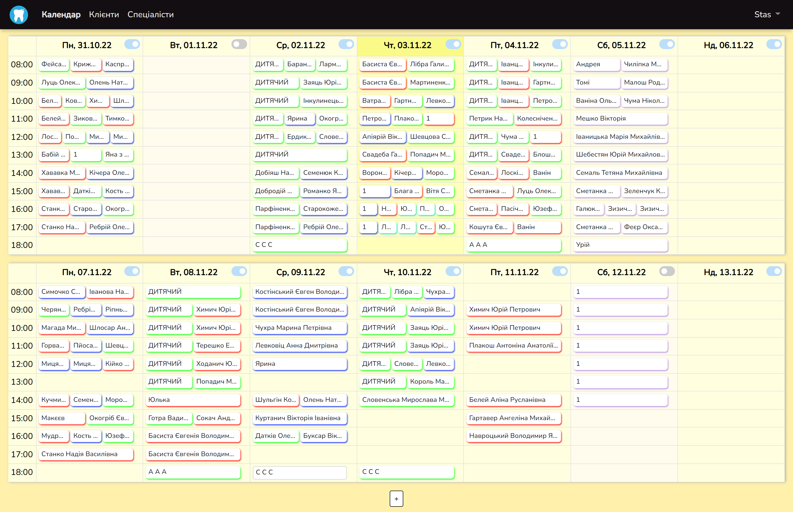
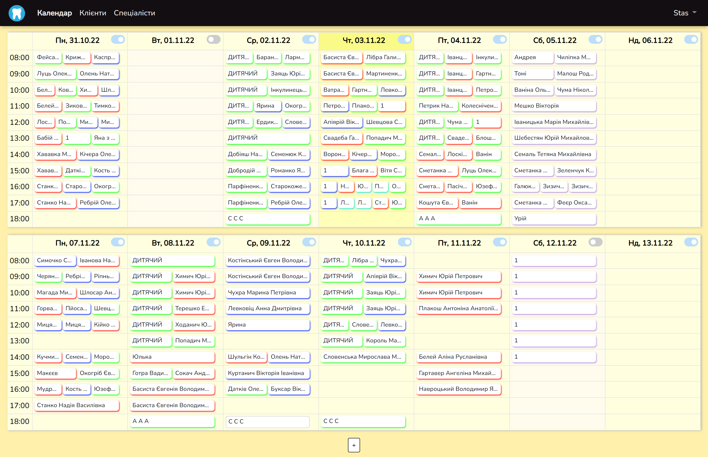

Календар для стоматологічної клініки

Цей сайт я зробив для свого брата, використовуючи стек Django + React. Ведеться календар прийомів, бази лікарів та клієнтів. Кожен прийом у календарі підсвічується іншим кольором в залежності від лікаря. У кожного лікаря є свій обліковий запис, в якому він бачить лише свої прийоми, може призначати нові, додавати клієнтів тощо.
Календарний компонент написав сам на основі html таблиць, не використовуючи сторонні бібліотеки. Також відмовився від використання сторонніх бібліотек-таблиць і написав свій компонент з пажинацією та фільтрацією, який отримує з бекенду хедер та рядки. В планах додати drag-n-drop переміщення прийомів на інший день/час.


Найперший мій закінчений проект з програмування - така ж база клієнтів та календар візитів для цього ж стоматологічного кабінету на Delphi+Firebird. Програма синхроніхзувалася між різними компютерами за допомогою Dropbox.
 

Під час виконання цього проекту я перейшов на використання React Hooks. Спочатку такі зміни були не зовсім зрозумілими (чому, наприклад, треба всіювати код useEffect'ами замість використання зручно названих componentDidMount, componentDidUpdate та колбеків в setState, які однозначно вказують, чому спрацювала функція?), але з часом я навчився цінувати зручні сторони такого підходу.
Навчився працювати з custom properties в CSS: зробив для сайту декілька тем: стандартні білу та чорну та, по спеціальному замовленню лікарів, кремово-кофейну. Обрана тема зберігається в профілі лікаря. Також більш серйозно заглибився у CSS, намагаючись зробити компонент Календар респонсивним.